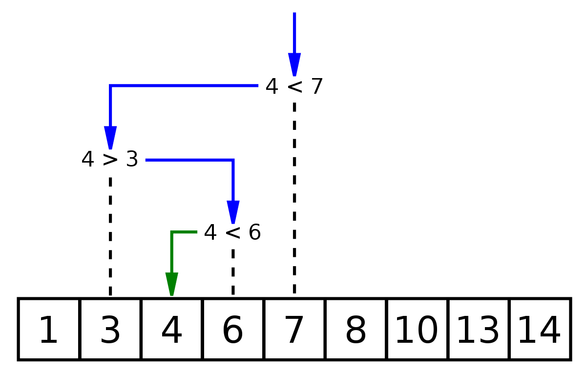

Binary Search & Quick Select
Visualization of the binary search algorithm where 7 is the target value
Binary search is a search algorithm that finds the position of a target value within a sorted array. It compares the target value to the middle element of the array; if they are unequal, the half in which the target cannot lie is eliminated and the search continues on the remaining half until it is successful. If the search ends with the remaining half being empty, the target is not in the array.
Binary Search | O(log2n)
func BinarySearch(_ arr: [Int],_ target: Int) -> Int {
var left = 0, right = arr.count-1
while left <= right {
// mid = right + left / 2 might cause integer overflow if right + left > 2^31
var mid = (right - left) / 2 + left
if arr[mid] == target {
return mid
} else if arr[mid] < target {
left = mid + 1
} else {
right = mid - 1
}
}
return -1
}Quick Select | O(n)
Animated visualization of the quickselect algorithm. Selecting the 22nd smallest value.

If we need to find the k'th (largest or smallest) element in an array, the simple simple approach will be just sort the array then return the element at k index, this however require O(nlog2n) runtime because of sorting. Quick Select algorithm can solve these type of problems in O(n) by using properties of binary search and the Quick Sort's partition function.
After one partition, the partition index will be the k'th smallest element, it is also the (size(array) - k)'th largest element. If the pivot index is not the k'th we looking for, we can continue search in the half that the k'th element will be in.
// find k'th largest in array
func QuickSelect(_ arr: [Int],_ k: Int) -> Int {
var arr = arr
var left = 0, right = arr.count - 1
let k = arr.count - k
var p = partition(&arr,left,right)
while p != k {
if p < k {
left = p + 1
p = partition(&arr,left,right)
}
if p > k {
right = p - 1
p = partition(&arr,left, right)
}
}
return arr[p]
}
func partition(_ arr: inout [Int],_ start: Int,_ end: Int) -> Int {
let pivot = arr[end]
var pIndex = start
for i in start..<end {
if arr[i] < pivot { // if the pivot has duplicate. all duplicates will go right
arr.swapAt(i, pIndex)
pIndex += 1
}
}
arr.swapAt(pIndex, end)
return pIndex
}